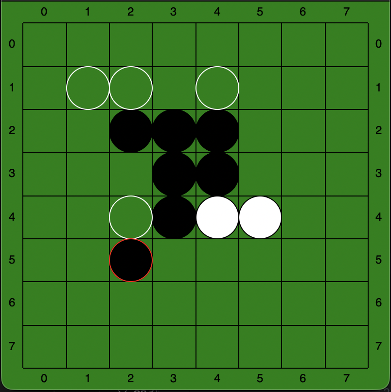
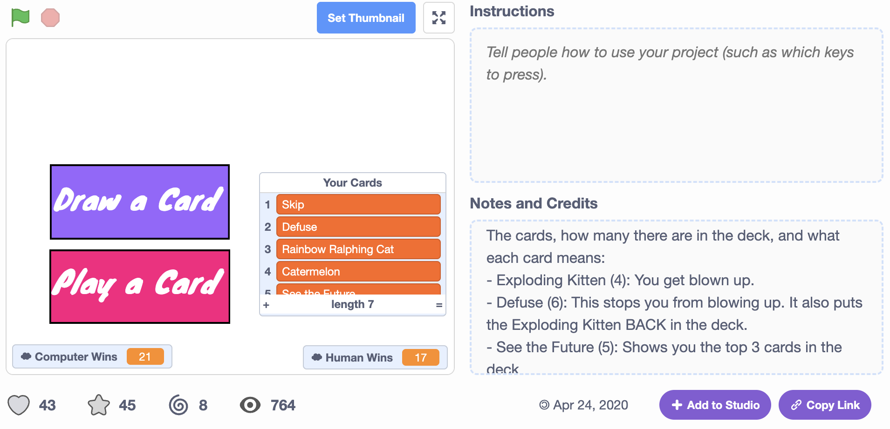
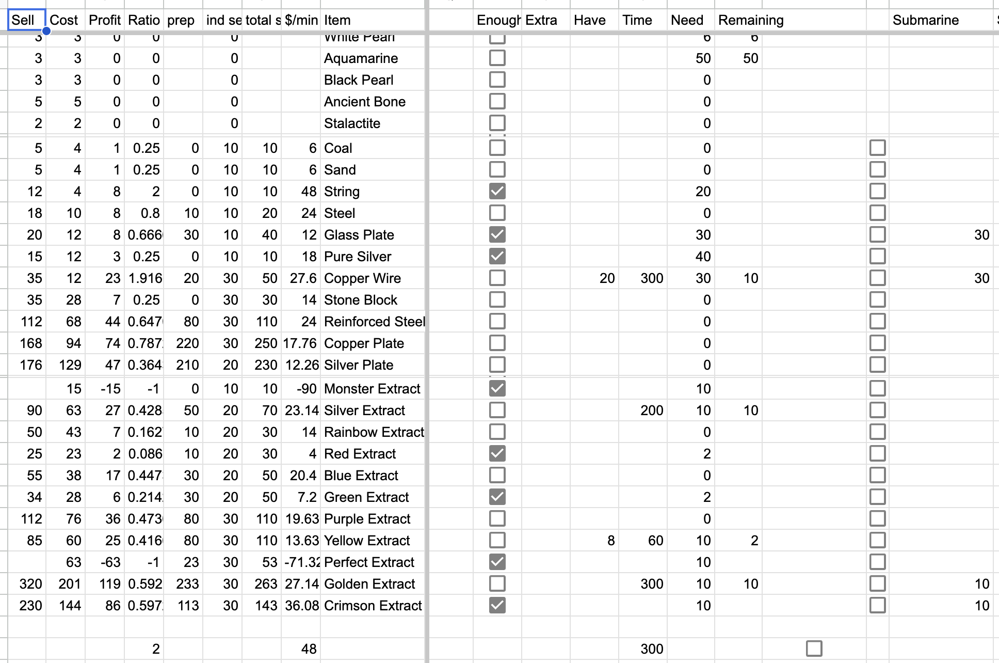

Amelia Whitlock |
Projects |
Contact |
Toggle Dark Mode |
|---|
|
 |
An othello game engine that has an AI that will play the best move against you (or itself!) |
|
 |
An Exploding Kittens game I made back in 2020! It uses block-based programming on Scratch and was made in two days. |
|
 |
A Google Sheet that I programmed to deal with the issue of knowing how many materials I needed to collect in order to progress in a mobile game I hyperfixated on.
It also helped me calculate the best way to make money in the game! |